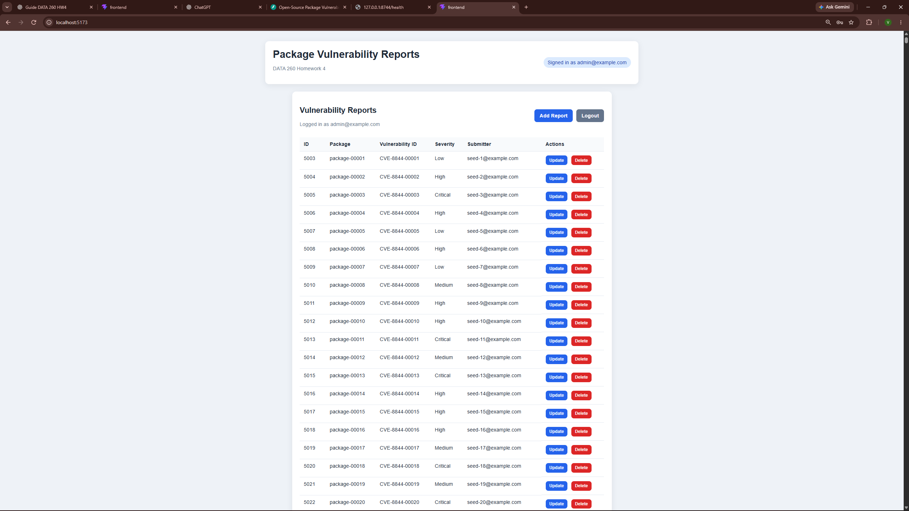
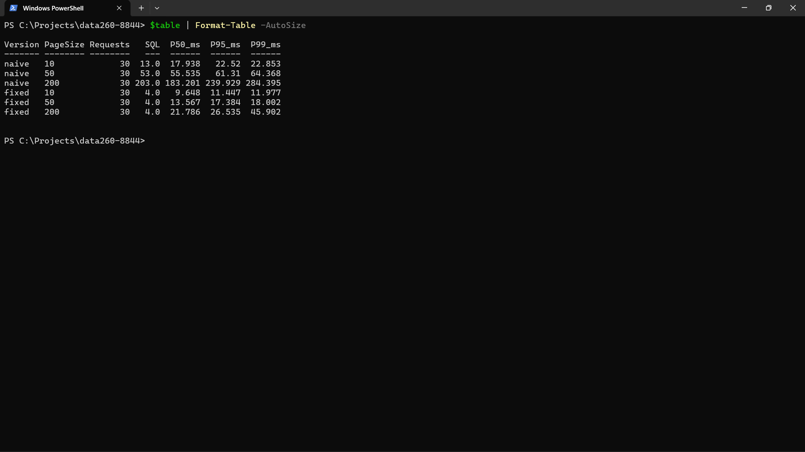
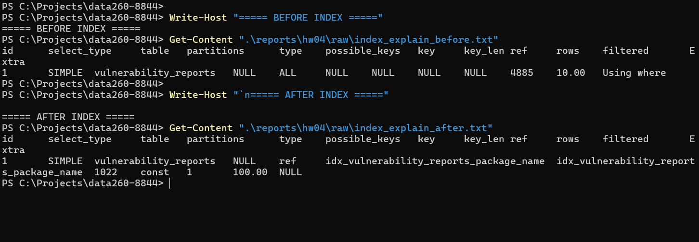
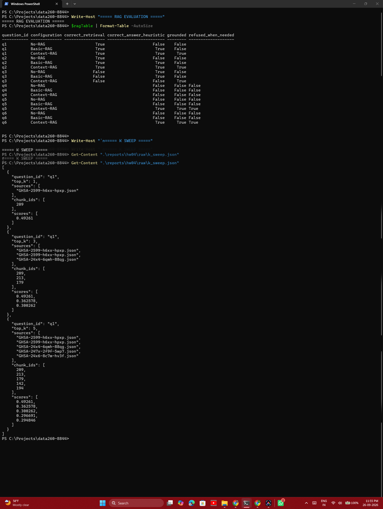

Database-backed vulnerability reports, an N+1 query comparison, indexing, and a small RAG experiment
| Student | Vrishin Dharmesh Kunnatham Parambath |
|---|---|
| SID4 / Seed | 8844 |
| Domain | Open-source package vulnerabilities |
| Environment | Windows 11, Python 3.14, MySQL 8.0, CPU |
| Model | Ollama qwen3:8b |
For this homework I extended the vulnerability-report application with a MySQL-backed API and a React frontend. The API uses login protection, sessions, and CRUD operations for reports. I also added benchmark routes so I could compare a naive loading pattern with a fixed version that avoids repeated database queries.
The second part was a small retrieval-augmented generation experiment. I used the documents selected in HW3, split them into chunks, retrieved relevant chunks for six questions, and compared No-RAG, Basic-RAG, and Context-RAG behavior.
The database was seeded with 5,000 vulnerability reports and 200 references. Unauthenticated report access returned HTTP 401, while login and authenticated CRUD requests worked. The screenshot below shows the authenticated dashboard and seeded records.

The benchmark used two versions, page sizes of 10, 50, and 200, and 30 requests for each combination. This produced 180 requests in total. The naive version performs repeated lookups while building the response. The fixed version loads related information more efficiently, so the number of SQL statements does not grow in the same way.

I compared the package-name query before and after adding an index. Before the index, MySQL estimated a much larger scan. After the index, the access type changed to an indexed reference lookup and the estimated rows dropped to about one for the tested lookup. This shows why indexing a column used in a filter matters even when the query itself is simple.

The corpus contained 69 documents and produced 850 chunks with 500-token chunks and 50-token overlap. I evaluated six questions across three configurations, giving 18 comparison rows. The raw evaluation table is heuristic, so I considered it together with the retrieved chunks and generated answers.
Questions 1 and 2 were answered correctly by the retrieval configurations. Question 3 showed a retrieval limitation because the relevant Pydantic AI source was not in the top three chunks. Question 4 was ambiguous. Questions 5 and 6 were correctly refused by Context-RAG, while No-RAG sometimes produced unsupported answers. Increasing k also brought in unrelated documents for Question 1, which shows that more context is not automatically better.

The main result of the database work was that authentication and CRUD behavior worked together with the seeded MySQL data. The benchmark made the N+1 issue visible instead of treating it as only a code-style concern. The index comparison showed a similar point: a small schema change can change how MySQL accesses the table.
The RAG results were mixed, which is expected for a small experiment. Retrieval helped when the right document was returned, but it could not answer a question reliably when the source was missing from the retrieved context. The refusal behavior was useful because it reduced unsupported answers. If I continued the experiment, I would improve document metadata, use a stronger retrieval evaluation set, and add clearer handling for ambiguous questions.
The repository includes the source code, questions, raw benchmark and RAG outputs, screenshots, METRICS.md, RUN_LOG.txt, AI_USE.md, and verification.json. The verification script completed with Overall verification: True.
The measurements in this report came from my local Windows environment. They should be interpreted as results from this run rather than universal performance guarantees.
AI assistance was used for technical tutoring, debugging, and organizing the report. The commands were run locally and the reported measurements came from the saved project outputs.